Calidad
Producto y terminaciones como parte central de la marca, no como un detalle final.
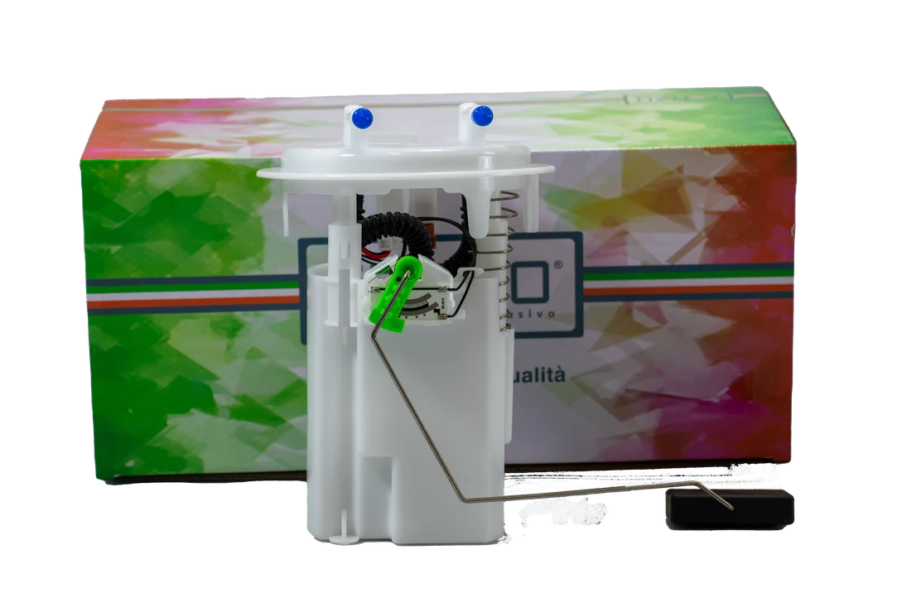
Desarrolladas con conocimiento real del mercado argentino. Producto, aplicación y respaldo.
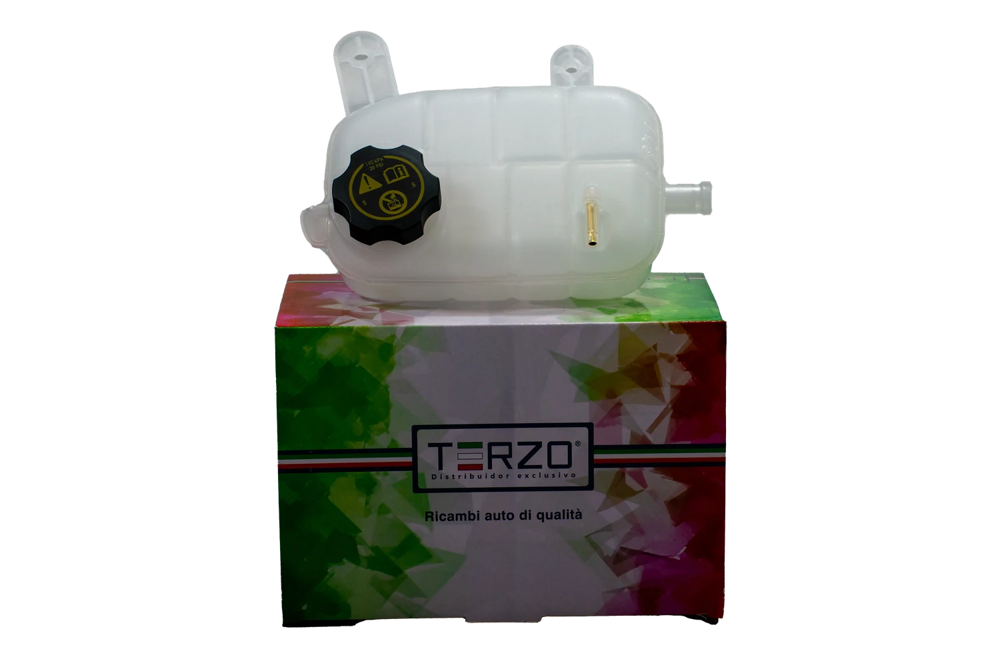
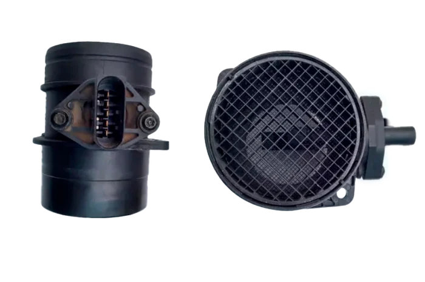
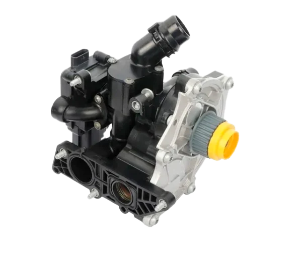
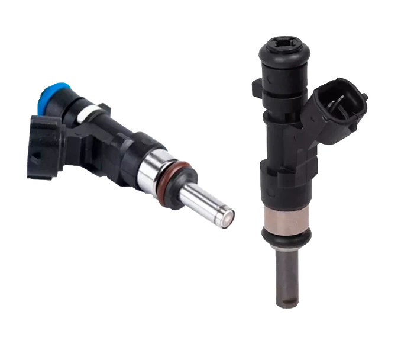
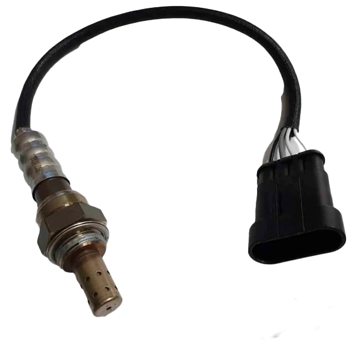
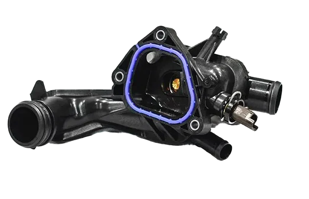
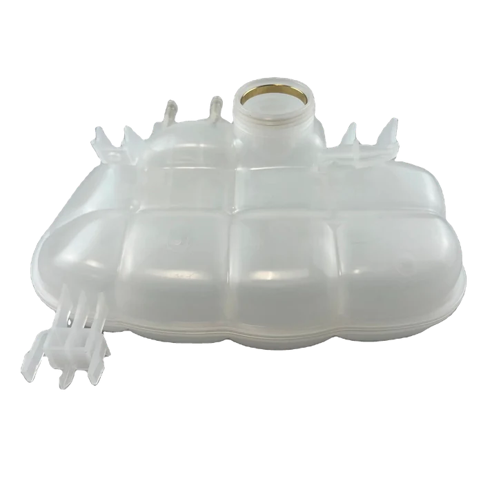
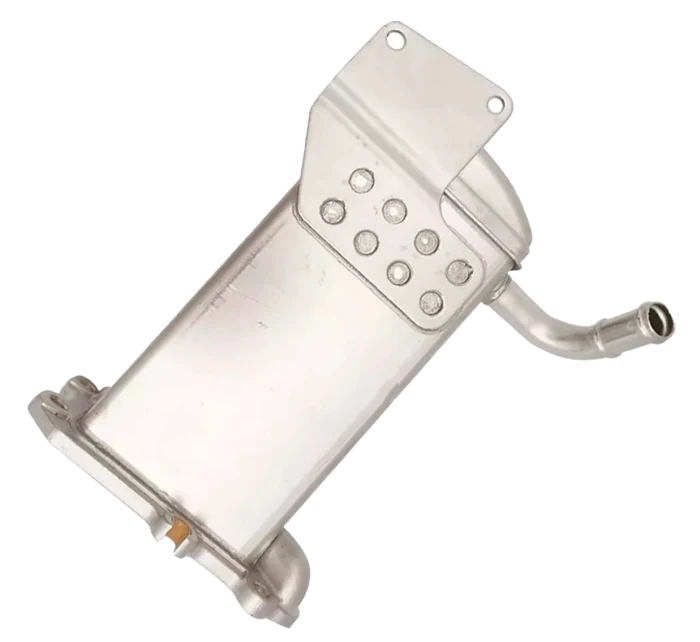
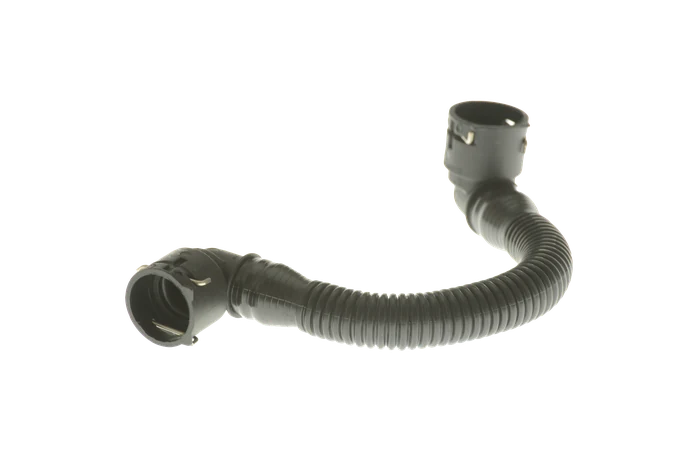
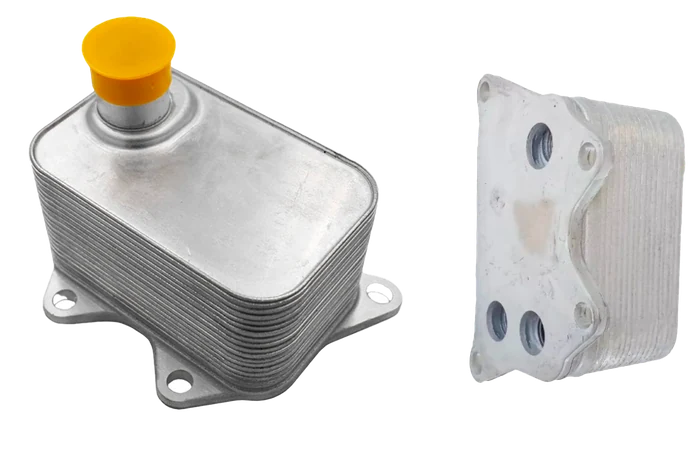
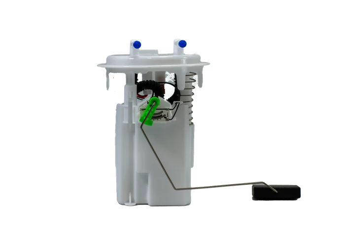
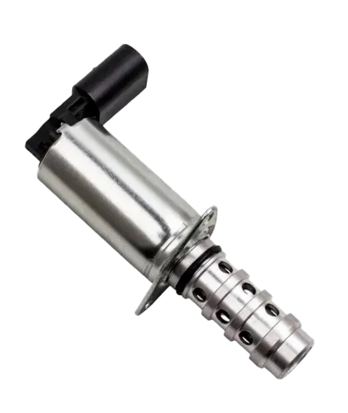
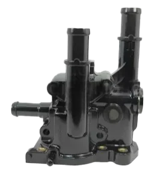
Piezas reales de la línea. Verificá siempre la aplicación antes de comprar.
T3RZO Autopartes nació en 2019 como evolución de años de experiencia en importación, distribución y contacto directo con el mercado argentino. Marca argentina, con desarrollo y selección de productos para las necesidades del mercado local.
Trabajamos sobre una idea simple: una buena autoparte no se define solamente por cómo se ve. No somos un logo sobre una caja. Detrás de cada línea existe un criterio de selección, aplicación, presentación y respaldo.
Por qué T3RZO
Producto y terminaciones como parte central de la marca, no como un detalle final.

La pieza correcta empieza por una identificación correcta. El parecido no alcanza.
Décadas de contacto real con casas de repuestos, mecánicos y proveedores.
Una marca nacida desde la experiencia de Patti Autopartes en el mercado argentino, con distribución mayorista propia.
Líneas de producto
T3RZO nació con una fortaleza particular en climatización y fue ampliando su oferta a otros rubros del mercado de reposición.
El rubro donde nació la marca y donde se construyó su primer criterio de selección.
Bombas de agua, termostatos, portatermostatos, depósitos de refrigerante y enfriadores completos.
Sensores MAF, sensores MAP, bobinas de encendido y componentes eléctricos y electrónicos.
Cilindros maestros, cilindros de embrague y cables de selectora.
Mangueras de agua, de aire y de intercooler o turbo, además de caños.
Piezas de alta rotación junto a piezas difíciles de conseguir en el mercado.
El listado representa la amplitud del catálogo, no una promesa de disponibilidad. Consultá siempre la aplicación correcta antes de comprar.
Dos piezas pueden parecer iguales y corresponder a aplicaciones diferentes. Estos cinco datos verifican la pieza correcta.
Contanos qué pieza buscás y qué datos tenés del vehículo. Un síntoma puede tener distintas causas: el diagnóstico lo hace un profesional.
Verificar una aplicaciónT3RZO desarrolla y amplía líneas a partir del conocimiento del mercado argentino y el trabajo con proveedores especializados. Cada incorporación forma parte de una estrategia de marca, no de una selección al azar.
Una marca propia no se construye eligiendo piezas al azar.
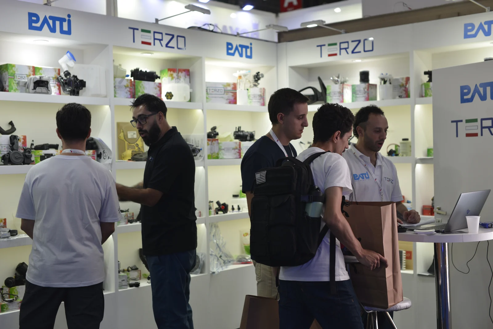
Historia y respaldo
T3RZO no nació desde una oficina intentando imaginar qué necesita el mercado. Nació después de años de escuchar al repuestero, trabajar con proveedores, importar y entender qué piezas necesitaban una alternativa confiable.
La empresa familiar importadora y distribuidora que le dio origen a la marca. La distribución mayorista de T3RZO se realiza a través de ella.
El stand de T3RZO y Patti Autopartes en una feria del sector. CONFIRMAR evento y año
Dónde conseguirla
Para una casa de repuestos, cada recomendación importa. T3RZO combina variedad, presentación, calidad y el respaldo mayorista de Patti Autopartes para acompañar el trabajo del mostrador.
Consultá la línea T3RZOEl pedido mayorista se gestiona con Patti Autopartes, distribuidor de la marca.
Consultá en tu casa de repuestos de confianza y pedí la marca por su nombre. También encontrás productos seleccionados en nuestra presencia oficial de Mercado Libre.
Ver Mercado LibreAntes de comprar, verificá modelo, versión, motorización y OEM.
Una marca argentina de autopartes desarrollada desde la experiencia real del mercado de reposición automotor.
La distribución mayorista se realiza a través de Patti Autopartes.
Pedila en tu casa de repuestos de confianza, o buscá productos seleccionados en nuestra presencia oficial de Mercado Libre.
Depende de modelo, año, motorización, versión y OEM. Ante una duda, escribinos con esos datos antes de comprar.
No. T3RZO es una marca argentina y trabaja con proveedores de distintos orígenes según cada línea.
Existe identidad de garantía de marca. Las condiciones específicas se consultan en la política vigente. CONFIRMAR política de garantía